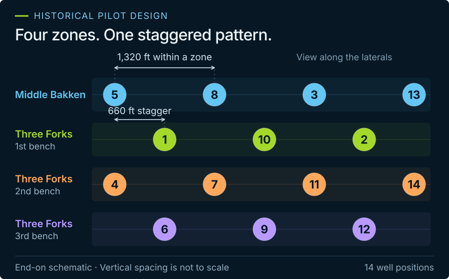

Compare geometry & design
Historical pilot targets. Colors follow the published numbered-well design. Survey paths use relative TVD without elevation correction; current branches are not verified as the original completed intervals.

Numbered wells from the published pilot design · Colors identify targets, not monitoring roles.
Source: Continental / EERC presentation, 2014 · slide 7 ↗
Survey geometry
Local plan view ↑ N
Drag to rotateScroll to zoomRight-drag to pan
Loading tour geometry…
Actual survey geometry. Line widths are enlarged for readability. Change the camera or color mode to explore.